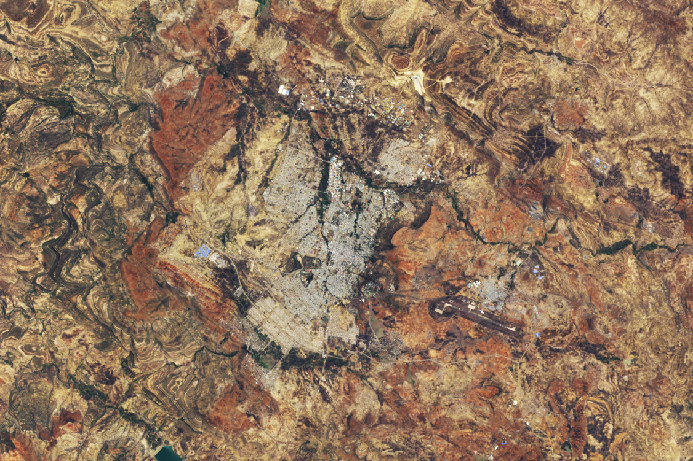

Breaking New Ground in Mekele
Since 1980, Africa’s population has tripled to 1.5 billion people, representing faster growth than any other continent. The trend is expected to continue. While many countries around the world experience stagnant or declining populations, most African nations are projected to grow rapidly in the coming decades.
By some estimates, Africa’s population will reach 2.5 billion by 2050, with more than 80 percent of the increase concentrated in cities, said Jody Vogeler, a researcher at Colorado State University using satellites to study urbanization trends. The continent’s fast-growing cities may see up to a 12-fold increase in urban land area by 2030.
Vogeler and other urbanization experts expect the fastest growth in secondary cities—those with populations over 100,000 that are regionally important but not the largest in a country. This growth is often accompanied by unplanned settlements, where infrastructure like roads, water, sanitation, schools, and electricity cannot keep pace with population expansion.
“Africa really is the last frontier for urbanization,” Vogeler said. “It’s often in secondary cities where we see the increase in the spatial extent of cities far outpacing population growth.”
To support urban planning, Vogeler’s lab is using remote sensing data to generate annual land-cover maps for pilot cities in Ethiopia, Nigeria, and South Africa. One example is Mekele, one of Ethiopia’s fastest-growing secondary cities. Situated in the northern highlands of Tigray, Mekele lies among sedimentary rock formations sculpted into layered ridges, steep cliffs, and flat-topped mountains.
Historically one of Africa’s least urbanized countries, Ethiopia has experienced rapid urbanization in recent decades, with many moving from rural areas to towns and small cities. Landsat images from 1984 and 2025 show Mekele’s transformation from a town of 60,000 to a city of over 500,000, featuring heavy industry, an airport, a cement plant, and large-scale planned residential neighborhoods.
Planned development in Mekele typically appears as large, regularly spaced buildings arranged in grid patterns around straight roads. This development has spread south, southeast, west, and northeast of the historical city center. In addition, unplanned settlements with smaller, irregularly shaped buildings have grown around these areas, especially on the outskirts, making up roughly 13 percent of the city.
“City planners and other stakeholders can miss a lot of areas that are really integral to cities by simply using the official administrative boundaries,” Vogeler said. “Urban growth can bring many positive services, such as jobs and economic growth, but when it happens too rapidly, there can be a real lag in infrastructure and investment that can lead to tremendous suffering.”
The lab’s land cover maps for Mekele and other cities in Ethiopia, Nigeria, and South Africa are designed to help city managers, urban planners, and researchers track changes over time. These maps also support specific United Nations sustainable development goals.